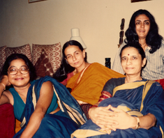
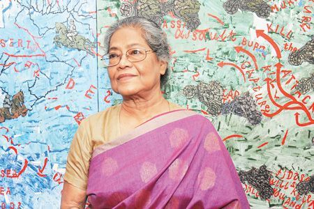

Time Period
Arpita Singh's early paintings were mainly water colors on paper. She would paint usually in black and white ink.
By the 80s, she started to paint Bengali folk paintings with women as the focus. She would use vibrant colors in a rather restrained way and her palette is usually dominated by pinks and blues. Her paintings would show women doing daily work and following simple routines in their lives. Arpita would draw daily use objects like trees, flowers, flower vases, animals, teapots, pillows, festoons and flags, and show women surrounded by them. Child Bride with Swan (1985) and Girl Smoking Cigarette (1985) are examples of her protagonists, leading uncomplicated lives.
In the 90s, Arpita's style of painting shifted to oil on canvas, but she continued to paint women-centric art. A lot of women emotions started to become evident in her paintings - Joy, sorrow, hope, and many more. She painted a series of paintings on the subject "Women with a Girl Child" in the last decade of 20th century. Arpita would showcase the problems like hatred, social injustice, etc. faced by a contemporary woman in her art. She would also paint around the ills related to girl child in India. In some of her paintings the women appear nude, but her paintings do not have sexual overtones and reflect the woman's vulnerability.

Arpita's paintings spoke a lot about wars and situation of turmoil at the national and international level. She would draw objects like guns, knives, cars and planes, soldiers, killers and corpses. India's former Prime Minister Indira Gandhi's assassination, the anti-Sikh riots of 1984, communal riots and the Gulf War are some examples. Women would continue to find the center stage in her art and are shown at the receiving end. The White Chair (1983), The series on Ayesha Kidwai, Durga (1993), My Mother (1993) and A Dead Man on the Street: is It You, Krishna (1994) are some of her paintings echoing this mood.

Broadly speaking, Singh’s career can be broken down into three phases: a formative period, in the early 1970s, featuring surrealist landscapes such as Beginning of the Festival; a detour into abstraction from the mid-1970s to the early 1980s, with works such as Untitled; and, finally and most durably, one of narrative scenes focusing heavily on female subjects, such as the aforementioned Women with Boats and Ducks (Painting 1) from the mid-1980s to the present day.
It is works from the final period for which she’s most famous and that generally achieve the highest prices.